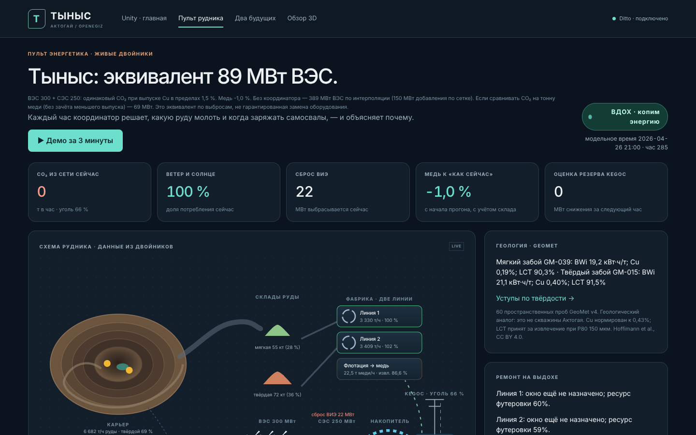
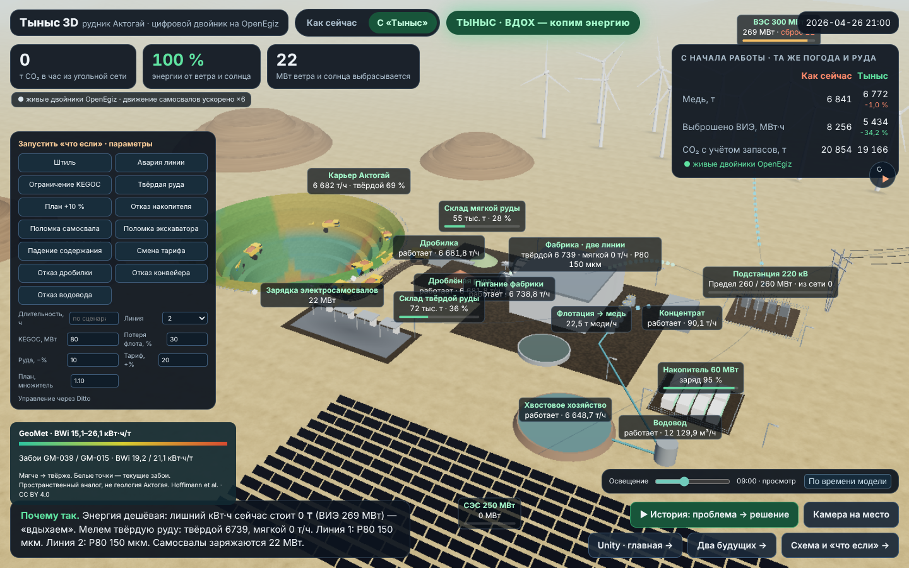
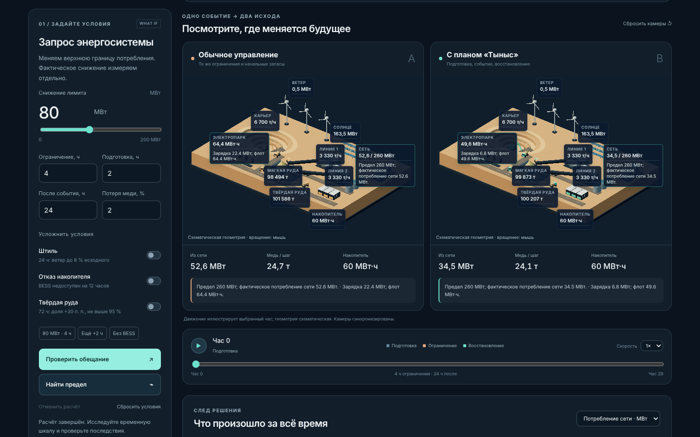

КОНКУРС «ЦИФРОВОЙ РУДНИК НА OPENEGIZ» · КОМАНДА «СУПЕРКРОШКИ»
«Тыныс» — цифровой двойник реального медного рудника на OpenEgiz: модель, сверенная с отчётом KAZ Minerals 2024, реальная погода 2024 г. и координатор, который каждый час решает, как руднику «дышать» вместе с ветром и солнцем.
shrailymadil-debug · liyaaal · yusubovanazik
ПРОБЛЕМА
в год по модели (отчёт KAZ Minerals 2024: ≈ 2 030 ГВт·ч)
в год с учётом запасов в конце прогонов (склады и заряд батарей)
рудник работает «ровно»; построенные ВЭС и СЭС будут сбрасывать энергию, когда она не нужна
Нужно решить: сколько ВЭС и СЭС строить, как руднику подстраиваться под них каждый час и что рудник может пообещать энергосистеме.
КТО ПОЛЬЗУЕТСЯ И КАКИЕ РЕШЕНИЯ ПРИНИМАЕТ
25 сочетаний мощностей × 4 способа управления на реальной погоде 2024 г. — блок «Сколько строить» на пульте.
Координатор (MPC на 24 ч) выдаёт план, уставки и объяснение «почему так». Цель: «медь» или «CO₂».
«Два будущих»: один снимок рудника, обычное управление и «Тыныс» рядом, последствия и восстановление.
РЕАЛЬНЫЙ ОБЪЕКТ И ДАННЫЕ
| Модель (V0, без ВИЭ) | KAZ Minerals 2024 | |
|---|---|---|
| Медь, тыс. т/год | 219,1 | 221 |
| Электроэнергия, ГВт·ч/год | 2 031 | ≈ 2 030 |
| Удельный расход, кВт·ч/т | 36,3 | ≈ 35 |
| Содержание / извлечение | 0,43 % / ≈ 88 % | 0,43 % / 87,9 % |
Вспомогательные потребители (водовод, хвосты, фильтрация, мастерские, посёлок) — 83 МВт при номинальных потоках; подобраны под энергию отчёта. Это калибровка, а не независимая проверка. Медь модель считает сама.
ПОСТРОЕНО НА OPENEGIZ
telemetry/<двойник> → Eclipse Ditto → Telegraf → InfluxDB → GrafanaРудник → карьер (экскаваторы, 14 звеньев самосвалов, зарядки) · фабрика (склады мягкой и твёрдой руды, 2 линии, флотация) · энергия (ВЭС, СЭС, накопитель, подстанция). Связи «кто кому передаёт руду и энергию» записаны в атрибутах двойников.
Запуск: sudo apt-get update && sudo apt-get install -y make · make tynys — проверено с нуля на Ubuntu 24.04 в GitHub Actions.
МОДЕЛЬ РУДНИКА
Экскаваторы → закреплённые звенья самосвалов → дробилка → конвейер → склады мягкой и твёрдой руды → конвейер питания → две линии мельниц → флотация → концентрат и хвосты; вскрыша — в отвал.
Мельницы: постоянная часть мощности 35 %, пределы изменения подачи и мощности за час, один P80 на линию. Вспомогательные потребители — отдельные двойники с МВт. Батареи 14 звеньев самосвалов, накопитель, ВЭС, СЭС, предел сети.
Исправность, наработка, ТО, ремонты и готовность у каждого объекта. Отказы ограничивают потоки, выпуск и энергию. Вода, хвосты, концентрат и вскрыша имеют материальные балансы.
60 координатных проб открытого набора GeoMet (CC BY 4.0): твёрдость BWi, медь и извлечение по месту добычи. Это пространственный аналог, не скважины Актогая.
Координатор ставит ТО и замену футеровки мельниц в окно, когда энергия из сети дороже (±12 ч от календаря, одна бригада).
Одна кнопка на пульте: штиль → 3D с остановленными ветряками и уступами по твёрдости → настоящий расчёт «Двух будущих».
ГДЕ СМОТРЕТЬ НА СТЕНДЕ · 1 / 3
http://localhost:8095/dashboard.html
ГДЕ СМОТРЕТЬ НА СТЕНДЕ · 2 / 3
/3d.html
http://localhost:8095 — та же шахта в Unity; плашка сверху показывает активные сценарии и ведёт к их запускуГДЕ СМОТРЕТЬ НА СТЕНДЕ · 3 / 3
/futures.html
ЧТО ЕСЛИ — НА СТЕНДЕ, БЕЗ ИЗМЕНЕНИЯ КОДА
| Сценарий | Что меняется в модели | Где видно |
|---|---|---|
| Штиль на сутки | ветер 8 % на 24 ч, в прогнозе | ВЭС, план, сброс, CO₂ |
| Авария линии 2 | линия недоступна 8 ч | линия красная, склады растут |
| Запрос KEGOC −80 МВт | предел сети 260 → 180 МВт на 4 ч | ЛЭП, план, накопитель, зарядка |
| Пошла твёрдая руда | 80 % твёрдой из забоя на 72 ч | карьер, склад твёрдой, энергия помола |
| План добычи +10 % | добыча 6 700 → 7 370 т/ч на 48 ч | самосвалы, склады, заряд |
| Отказ накопителя | накопитель недоступен 12 ч | накопитель, резерв, план |
| Ещё | поломка самосвалов / экскаватора, падение содержания меди, смена тарифа, отказы дробилки, конвейера, водовода | пульт и 3D, кнопки в обоих |
Длительность, линия, мощность запроса, доля потерь — задаются на экране. CI включает сценарии через двойник scenario, проверяет след в двойниках и последствия для меди и CO₂, затем отменяет.
РЕЗУЛЬТАТ · ГОД НА РЕАЛЬНОЙ ПОГОДЕ 2024 · ВЭС 300 + СЭС 250 МВт
| CO₂, тыс. т/год* | Медь, тыс. т/год | Сброс ВИЭ, ГВт·ч | |
|---|---|---|---|
| Сегодня (без ВИЭ) | 1 661 | 219,1 | 0 |
| ВИЭ, управление как сейчас | 978 (−41 %) | 219,1 | 94 |
| ВИЭ + «Тыныс», цель «CO₂» | 935 | 216,8 | 49 |
| ВИЭ + «Тыныс», цель «медь» | 1 000 | 221,1 | 48 |
* С учётом запасов в конце прогонов (склады, заряд батарей). Источник: team/tynys/sizing.py → data/sizing.csv, сводка — analyze_sizing.py.
ЦЕНА ВЫБОРА В ДЕНЬГАХ · ВЭС 300 + СЭС 250 МВт · К УПРАВЛЕНИЮ «КАК СЕЙЧАС»
| Медь, т/год | Медь, млн $ | Энергия, ГВт·ч | Энергия, млн $ | Итого, млн $/год | |
|---|---|---|---|---|---|
| Цель «медь» | +2 076 | +25,5 | +28,2 | −3,1 | +22,4 |
| Цель «CO₂» | −2 293 | −28,1 | −54,8 | +5,9 | −22,2 |
Медь 14 441 $/т (LME, 21.10.2026), оплачиваемая доля 0,85 (допущение), курс 452,59 тенге за $ (Нацбанк РК, 20.10.2026), тариф 49,03 тенге/кВт·ч, ВЭС 1 041 $/кВт (IRENA 2024). Расчёт: team/tynys/economics.py.
ЧЕСТНО О ГРАНИЦАХ
Польза: руководство видит, какие ВЭС и СЭС окупаются меньшим углём; энергетик понимает каждое решение — двойник объясняет его словами.